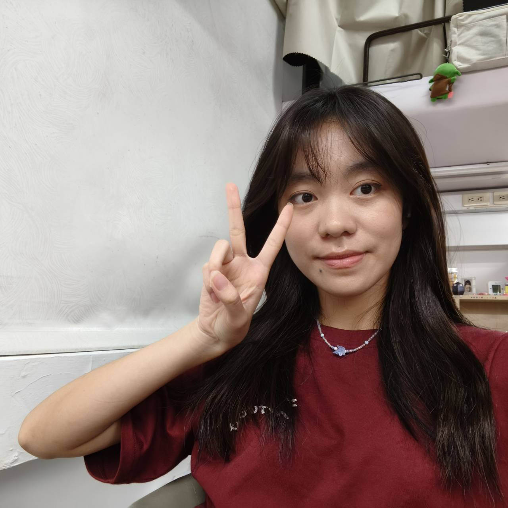
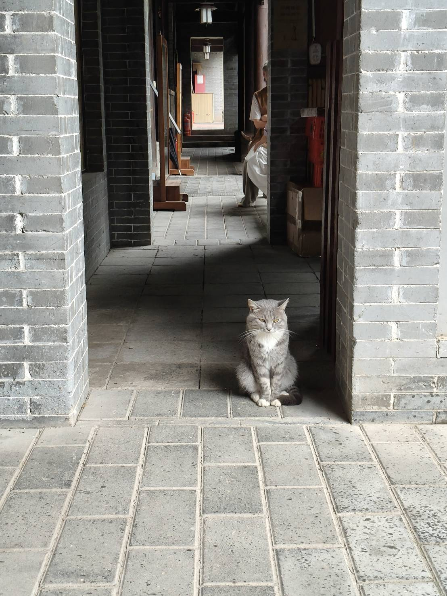
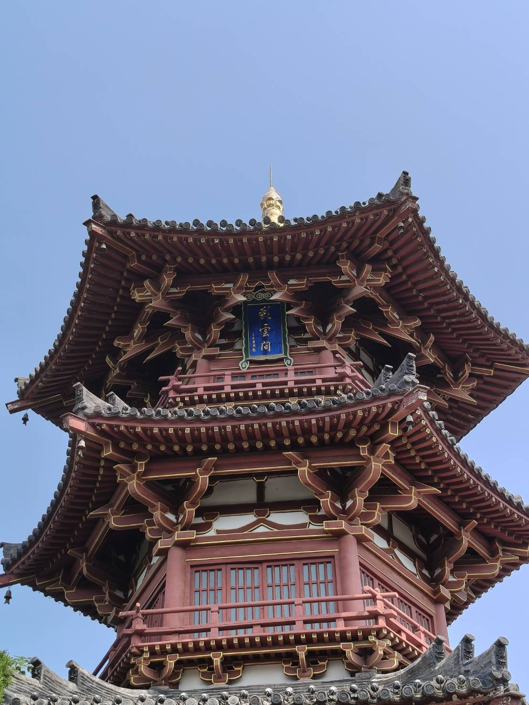
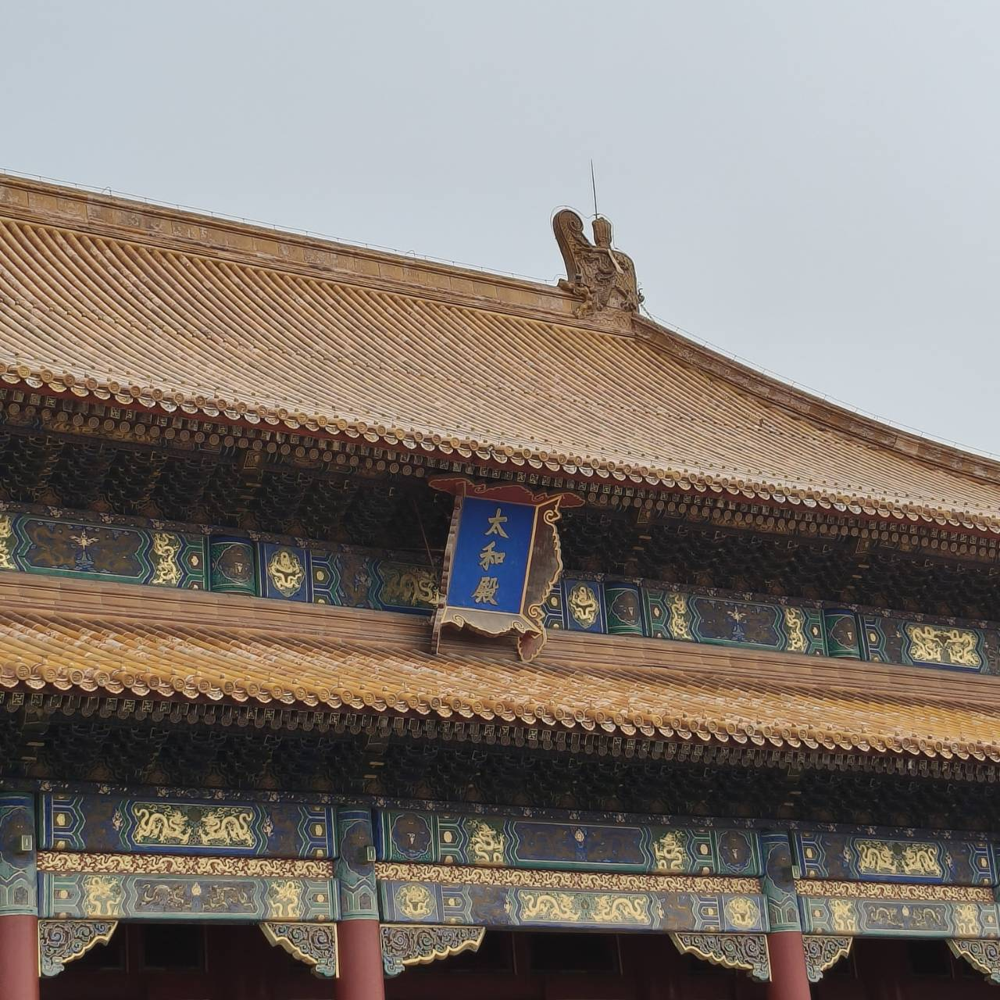

->關於我
 |
陳虹霏國立台北教育大學資訊科學系二年級學生 |
我是一位大學生，專注學習網際網路和Python 程式設計
此外，我也熱愛文學、音樂與旅遊，希望將人文藝術與科技結合，注入更多元的靈感與視野。
Phoebe的個人部落格#共軛JP人 #沒有語言天賦之人 #選擇困難症患者 |
 |
陳虹霏國立台北教育大學資訊科學系二年級學生 |
我是一位大學生，專注學習網際網路和Python 程式設計
此外，我也熱愛文學、音樂與旅遊，希望將人文藝術與科技結合，注入更多元的靈感與視野。
| Dates | Work |
|---|---|
| 2022-2025 | 國立新竹女子高級中學 |
| 2025-至今 | 國立台北教育大學 |
| Java | ⭐⭐ |
| C++ | ⭐⭐⭐ |
| Python | ⭐⭐ |
簡介：這首歌用Suno創作 曲風是中式古典，「順天意，承因果，今日方知我是我」，描寫的是人的選擇和命運千絲萬縷的關係
簡介：這首歌用Suno創作 曲風是經典老歌＋中式古典，「莫言多病為多情，此身甘向情中老」，描寫對愛情長久美好的盼望


